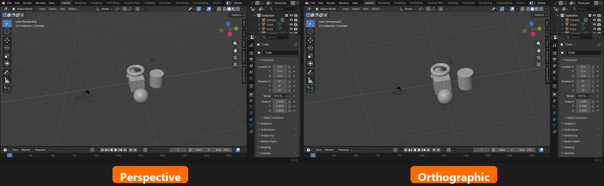
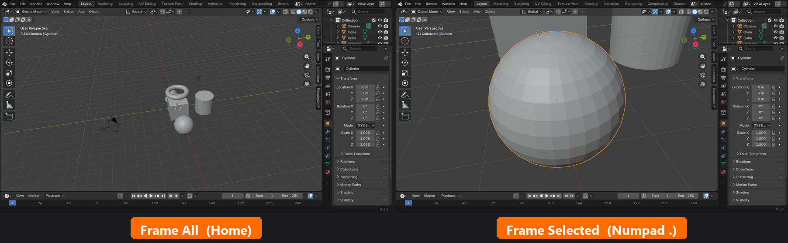
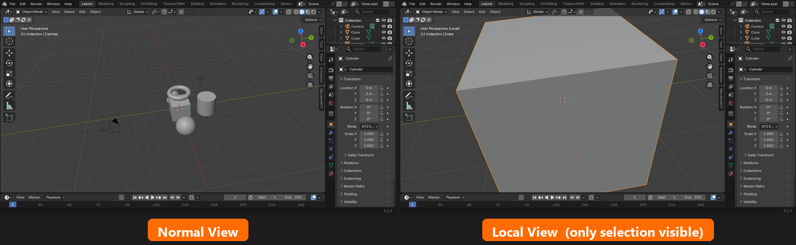
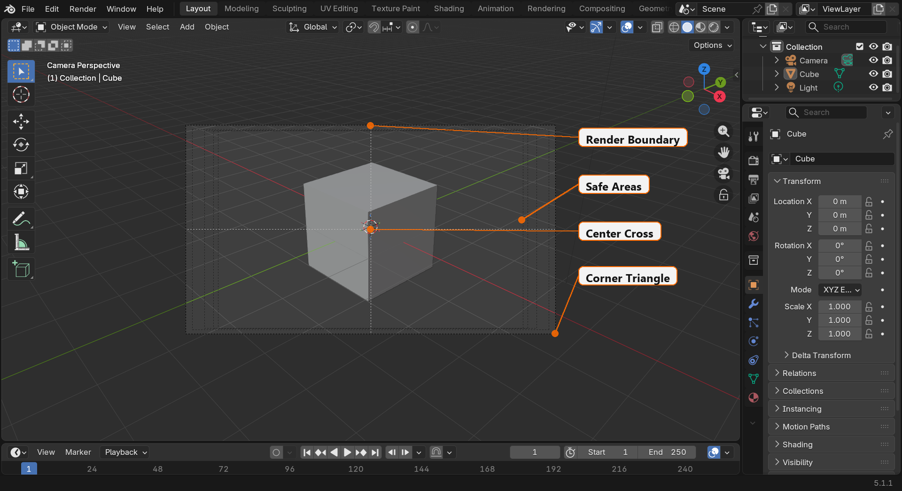
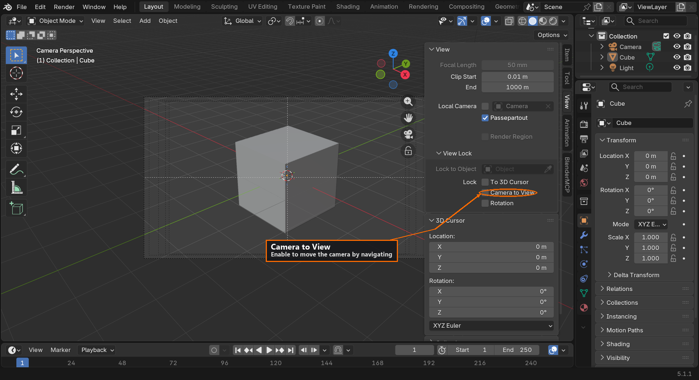
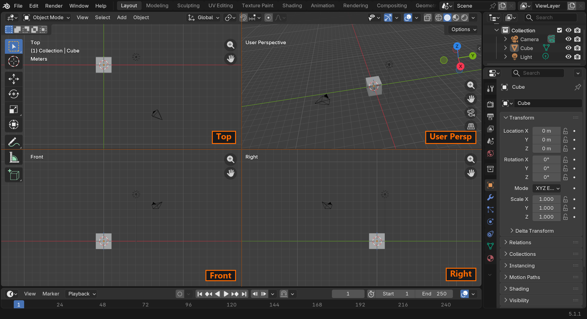

🧭 Navigation and Viewport Control
Imagine trying to paint a portrait while standing in one fixed position—you could never see the other side of your subject! In 3D work, being able to move freely around your creations is essential. This lesson will teach you to navigate Blender's 3D space with the fluidity of a camera operator, giving you complete control over your viewpoint and making you feel truly at home in the three-dimensional world.
📚 What You'll Learn
- The three fundamental navigation operations: orbit, pan, and zoom
- Using your mouse and keyboard together for smooth navigation
- Understanding perspective vs. orthographic views
- Quick navigation to standard views (front, side, top)
- Focusing on objects and framing your scene
- Camera view and understanding what will render
- Navigation best practices and common mistakes to avoid
- Advanced navigation techniques for precision work
⏱️ Estimated Time: 60-75 minutes
🎯 Project: Navigation obstacle course to build muscle memory
In This Lesson
🔄 The Big Three: Orbit, Pan, Zoom
All viewport navigation comes down to three fundamental operations. Master these three, and you can navigate anywhere in your 3D scene.
Orbit: Rotating Around Your Scene
Orbiting means rotating your view around a central point, like a camera circling around a sculpture. This is how you see different sides of your objects without moving them.
🖱️ How to Orbit
Middle Mouse Button (MMB) + Drag
- Press and hold your middle mouse button (scroll wheel click)
- Move your mouse in any direction
- Your view rotates around the scene
- Release to stop orbiting
Think of orbit like this: imagine your viewpoint is on a sphere surrounding your object. Orbiting moves you around that sphere, always looking at the center. You're not moving the object—you're moving yourself around it.
💡 Try It Now: Basic Orbit
- Open Blender with the default scene (cube, camera, light)
- Press and hold your middle mouse button
- Drag left and right—you orbit horizontally around the cube
- Drag up and down—you orbit vertically
- Drag in circles—you can orbit from any angle!
- Practice for 30 seconds, getting comfortable with the motion
Understanding the Orbit Center
By default, Blender orbits around a point in the middle of your visible scene. This center point adjusts based on your selection and what's visible. We'll learn to control this precisely in the advanced techniques section.
Pan: Moving Sideways Through Your Scene
Panning means sliding your view left, right, up, or down without rotating. Imagine looking through a window and moving sideways to see different parts of the view—that's panning.
🖱️ How to Pan
Shift + Middle Mouse Button (MMB) + Drag
- Hold down Shift on your keyboard
- Click and hold middle mouse button
- Move your mouse to slide the view
- Your view moves parallel to the screen
Panning is essential for centering objects in your view, working on off-center areas, and precisely positioning elements. Unlike orbit, panning doesn't change your viewing angle—just your position.
💡 Try It Now: Basic Pan
- Look at your default cube in Blender
- Hold Shift + Middle Mouse Button and drag right
- The cube slides to the left side of your view
- Shift + MMB drag left to bring it back
- Try dragging up and down too
- Practice panning the cube to different areas of your screen
Zoom: Moving Closer or Further Away
Zooming changes your distance from objects—moving your viewpoint closer to see details or further away to see the whole scene.
🖱️ How to Zoom
Mouse Scroll Wheel
- Scroll up (roll wheel away from you) to zoom in
- Scroll down (roll wheel toward you) to zoom out
- Each scroll increment moves you closer or further
Alternative: Ctrl + Middle Mouse Button + Drag
- Hold Ctrl + Middle Mouse Button
- Drag up to zoom in
- Drag down to zoom out
- More precise control than scroll wheel
Zooming is your tool for adjusting working distance. Zoom in for detailed work, zoom out for composition and overall structure.
💡 Try It Now: Basic Zoom
- Looking at your default cube, scroll your mouse wheel up
- You zoom closer to the cube
- Scroll down to zoom back out
- Get very close, then very far away
- Now try Ctrl + MMB drag up and down
- Notice how this gives smoother, more controlled zooming
Combining the Three Operations
Real navigation fluency comes from combining orbit, pan, and zoom seamlessly. You might orbit to see a different angle, pan to center something, zoom in for detail work, orbit again, zoom out—all in a few seconds.
✅ Practice Exercise: Combine All Three
Let's practice combining operations:
- Orbit around your cube to view it from behind
- Pan to move the cube to the left side of your screen
- Zoom in close to the cube
- Orbit again to see it from a different close-up angle
- Pan to recenter it
- Zoom out to see the whole scene
Repeat this sequence three times, trying to move smoothly between operations. Your hands are learning the choreography!
Muscle Memory Development: Navigation might feel awkward for the first hour or two of practice. This is normal! Your hands are learning new motor patterns. By your third or fourth Blender session, the movements will start feeling natural. By your tenth session, you won't even think about them.
👁️ Perspective vs. Orthographic Views
Blender offers two fundamentally different ways to view your 3D scene: perspective and orthographic. Understanding the difference is crucial for different types of work.
Perspective View: How Eyes See
Perspective view mimics how human eyes perceive the world—objects further away appear smaller. This is the default view in Blender and how most 3D visualization works.
Imagine standing on train tracks. The rails appear to converge in the distance, even though you know they're parallel. That's perspective—distant objects appear smaller, and parallel lines appear to converge at a vanishing point.
💡 When to Use Perspective View
- General 3D work: Most creation and manipulation
- Artistic composition: Setting up scenes for rendering
- Realistic visualization: How the final result will look
- Sculpting: Organic modeling where you need depth perception
Orthographic View: Technical Precision
Orthographic view eliminates perspective—all parallel lines stay parallel, and objects are the same size regardless of distance. This is like looking at an architectural blueprint or technical drawing.
Think of orthographic view as if you had infinitely good eyes that could focus on everything at once without perspective distortion. Objects 10 feet away and 100 feet away appear the same size if they actually are the same size.
💡 When to Use Orthographic View
- Precise modeling: When you need to judge exact sizes and alignments
- Technical work: Mechanical parts, architecture, hard-surface modeling
- UV editing: Laying out textures (usually automatic in UV workspace)
- Checking alignment: Making sure elements line up perfectly
Switching Between Perspective and Orthographic
🔄 Toggle Perspective/Orthographic
Numpad 5: Toggle between perspective and orthographic
OR
View menu → Perspective/Orthographic
In the top-left corner of your viewport, you'll see text indicating your current view mode. Look for "Persp" (Perspective) or "Ortho" (Orthographic).
✅ Try It Now: See the Difference
- Look at your default cube in Blender
- Add more objects: Press Shift+A → Mesh → UV Sphere, then click to place it
- Press Shift+A → Mesh → Cone, click to place
- Press G then X then 5 to move the cone 5 units on the X-axis
- Now press Numpad 5 to switch to Orthographic view
- Notice how the objects look "flatter" and more technical
- Press Numpad 5 again to return to Perspective
- See how objects now have depth and perspective distortion
- Toggle back and forth a few times to understand the difference
Visual Comparison

Practical Usage Tips
Most artists work primarily in perspective view and switch to orthographic when they need precision. Here's a typical workflow:
- Start in perspective for general scene building and creative work
- Switch to orthographic when aligning objects or checking measurements
- Use standard orthographic views (front, side, top) for technical modeling
- Return to perspective to see how things look naturally
- Final composition always in perspective (or camera view)
⚠️ Common Beginner Mistake
New users sometimes accidentally switch to orthographic view and wonder why everything looks "weird." If your view suddenly looks flat or you press Numpad 5 by accident, just press it again to return to perspective. Check the top-left corner of the viewport to see which mode you're in.
Professional Insight: CAD and technical modelers often work exclusively in orthographic views because precision matters more than visual realism. Artistic modelers and character artists typically work in perspective because they're focused on how things look, not exact measurements. Choose the view that serves your current task!
🧭 Standard Views and Quick Navigation
Sometimes you need to view your scene from precise, standard angles—front, back, left, right, top, or bottom. These are called standard views, and Blender makes them instantly accessible.
The Six Standard Views
Think of your scene as being inside a cube. The six standard views are like looking at it from each face of that cube—perfectly aligned with your scene's axes.
📐 Standard View Shortcuts (Numpad)
| Key | View | What You See |
Numpad 1 |
Front View | Looking at the front of your scene |
Ctrl + Numpad 1 |
Back View | Looking at the back (opposite of front) |
Numpad 3 |
Right View | Looking from the right side |
Ctrl + Numpad 3 |
Left View | Looking from the left side |
Numpad 7 |
Top View | Looking down from above |
Ctrl + Numpad 7 |
Bottom View | Looking up from below |
💡 Remember the Pattern
The numpad keys follow a logical pattern:
- 1, 3, 7: The primary views (front, right, top)
- Ctrl + 1, 3, 7: The opposite views (back, left, bottom)
- These three numbers are easy to remember and give you all six views!
✅ Try It Now: Tour the Standard Views
- Press
Numpad 1— you're now looking at the front of your scene - Notice "Front Ortho" appears in the top-left corner
- Press
Numpad 3— you jump to the right side view - Press
Numpad 7— you're now looking down from the top - Press
Ctrl + Numpad 1— you flip to the back view - Press
Ctrl + Numpad 3— you're viewing from the left - Press
Ctrl + Numpad 7— you're looking up from below - Cycle through all six views a few times to build the muscle memory
Automatic Orthographic Mode
Notice something? When you jump to a standard view, Blender automatically switches to orthographic mode. This is intentional—standard views are typically used for technical work where you need precise, non-distorted views.
If you want to return to perspective mode while staying in a standard view, just press Numpad 5 to toggle back to perspective.
The Opposite View Trick
Here's a useful shortcut: pressing Numpad 9 flips you to the opposite view of wherever you currently are. Looking at the front? Numpad 9 takes you to the back. At the top? Numpad 9 flips you to the bottom. This is faster than remembering whether you need Ctrl or not!
Camera View
There's one more critical view to know about:
📷 Camera View
Numpad 0: Toggle camera view on/off
Camera view shows exactly what will be rendered in your final image. The viewport frame shows the camera's boundaries—anything outside won't appear in renders.
💡 Try It Now: Camera View
- Press
Numpad 0to enter camera view - You see a rectangular frame—this is your render boundary
- "Camera" appears in the top-left corner
- Try orbiting with MMB—you're now orbiting around the camera
- Press
Numpad 0again to exit camera view
Camera view is crucial for composition—it shows exactly what your audience will see!
The Tilde (~) Quick Menu
Don't have a numpad? There's an alternative! Press the tilde key ~ (usually top-left of the keyboard, same key as backtick) to open a pie menu with all the standard views.
🥧 Tilde Pie Menu
Press ~ then:
- Move mouse to select view direction
- Click to jump to that view
- Or press number keys 1-9 while menu is open
- Esc to cancel
Using Standard Views Effectively
Standard views are essential for specific tasks. Here's when to use each:
Front View (Numpad 1)
- Character modeling from reference images
- Checking symmetry on faces or objects
- Aligning elements that need to be centered
- Building facades for architectural work
Right/Left View (Numpad 3 / Ctrl+3)
- Profile views of characters or objects
- Side elevations in architecture
- Checking depth and thickness of models
- Aligning elements along the X-axis
Top View (Numpad 7)
- Floor plans and layout work
- Arranging multiple objects in a scene
- Creating roads, terrain features, or paths
- Checking object placement and spacing
Camera View (Numpad 0)
- Final composition and framing
- Lighting setup and checking shadows
- Ensuring important elements are in frame
- Previewing exactly what will render
The View Rotation Shortcuts
Want to rotate your view in precise increments? These shortcuts rotate your current view by 15° or 90°:
| Shortcut | Action |
Numpad 4 |
Rotate view 15° left |
Numpad 6 |
Rotate view 15° right |
Numpad 8 |
Rotate view 15° up |
Numpad 2 |
Rotate view 15° down |
These are like nudging your view in small, controlled increments—useful for fine-tuning your viewing angle!
Professional Workflow: Experienced artists fluidly switch between free navigation (MMB orbit) and standard views. They might orbit freely to find a good angle, snap to front view for precision work, orbit again, check top view, then return to camera view for composition. This constant view-switching becomes second nature and dramatically speeds up work.
🎯 Focusing and Framing Objects
One of the most frustrating experiences for beginners is losing track of objects—they zoom out too far, or an object ends up off-screen. Blender has powerful tools to help you focus on what matters.
Frame All: See Everything
The "Frame All" command automatically adjusts your view to show all visible objects in your scene. Think of it as "zoom to fit everything."
🔍 Frame All Objects
Home Key: Frames all objects in the viewport
OR
View menu → Frame All
Use this when:
- You've zoomed in too close and want to see the big picture
- Objects are scattered and you want to see them all at once
- You've lost your orientation and need to reset
- Starting work on a new scene to get your bearings
✅ Try It Now: Frame All
- Zoom way in on your cube until it fills the screen
- Pan randomly so you're looking at a weird angle
- Now press
Home - Instantly, you can see all objects nicely framed!
- Zoom and pan randomly again, then press Home to reset
Frame Selected: Focus on What Matters
Even more useful than Frame All is Frame Selected—this zooms to show only the selected object(s), ignoring everything else. It's like saying "show me THIS thing, nothing else matters right now."
🎯 Frame Selected Object
Numpad Period (.): Frames the selected object(s)
OR
View menu → Frame Selected
This is incredibly useful when:
- Working on a specific object in a crowded scene
- You can't find where a selected object is located
- Switching focus between different objects quickly
- Modeling details on one part of a larger object
✅ Try It Now: Frame Selected
- Click to select your cube (it will have an orange outline)
- Press
Numpad .(period) - The view zooms and frames just the cube
- Click to select the light instead
- Press
Numpad .again - Now you're zoomed to just the light
- Select the camera and frame it the same way
This becomes muscle memory: select object, tap numpad period, work on it, select something else, tap period, work on that. Lightning fast!

Zoom to Mouse Cursor
By default, zooming centers on the middle of your viewport. But you can change this to zoom toward wherever your mouse cursor is pointing—incredibly intuitive once you try it!
🖱️ Enable Zoom to Mouse
- Go to Edit → Preferences → Navigation
- Check "Zoom to Mouse Position"
- Now when you scroll to zoom, you zoom toward your cursor
- Point at something, zoom in—you zoom right to it!
Many artists love this option because it makes zooming feel more natural—you look at what interests you, scroll to zoom, and you zoom to exactly that spot.
Center View to Cursor
Sometimes you want to make a specific point in 3D space the center of your orbit. Place your 3D cursor (we'll cover this more in the next lesson), then use this shortcut:
📍 Center View to 3D Cursor
Alt + Home: Centers your view and orbit point on the 3D cursor
The Local View: Isolate Your Focus
Here's a powerful feature many beginners don't discover for months: Local View. This temporarily hides everything except your selected objects, eliminating distractions.
🔬 Local View (Isolation Mode)
Numpad / (forward slash): Toggle local view on/off
How it works:
- Select one or more objects
- Press
Numpad / - Everything else disappears—you see only selected objects
- Work on your objects without distractions
- Press
Numpad /again to exit and see everything
💡 Try It Now: Local View
- Select your cube
- Press
Numpad / - Everything else disappears—just the cube remains
- Notice "(Local)" appears in the top-left corner
- Navigate around—the cube stays isolated
- Press
Numpad /again to exit local view - Everything reappears!

Local View is fantastic when you're working on one object in a complex scene and don't want visual clutter. It's like having a clean workbench for just that one object.
⚠️ Local View Gotcha
If you accidentally enter local view and don't realize it, you might wonder why you can't see other objects! Check the top-left corner of the viewport—if it says "(Local)", press Numpad / to exit and see everything again.
Pro Tip: Combine Frame Selected with Local View for maximum focus. Select an object, press Numpad / to isolate it, then Numpad . to frame it perfectly. Now you're in a distraction-free workspace optimized for that object. This is a professional workflow technique that dramatically improves concentration on complex models.
📷 Camera View and What You'll Render
Everything we've discussed so far is about navigating your working view. But there's one view that's fundamentally different and critically important: Camera View. This is what your audience will actually see in the final render.
Understanding the Camera
Think of Blender's camera like a real camera on a film set. You can walk around the set, view props from any angle, move lights, adjust things—but what matters in the end is what the camera sees. That's what appears in the final movie or photograph.
In Blender, it's the same. You navigate freely to work, but only what's visible through the camera gets rendered. The camera is like an actor in your scene—it's an object you can move, rotate, and adjust just like any other object.
Entering Camera View
📸 Camera View Shortcut
Numpad 0: Toggle camera view on/off
When active, you'll see:
- A rectangular frame showing the render boundaries
- "Camera" text in the top-left corner
- Anything outside the frame won't render
- Dashed lines showing the "safe areas"
✅ Try It Now: Explore Camera View
- Press
Numpad 0to enter camera view - You see the rectangular frame—this is your render boundary
- Try orbiting with MMB—you orbit around the camera
- Notice the cube might be partially out of frame
- Press
Numpad 0to exit camera view - Enter again with
Numpad 0 - Get comfortable toggling in and out of camera view
The Camera Frame
The frame you see in camera view isn't just decorative—it shows exactly what will render:
- Solid frame: This is the render boundary—nothing outside renders
- Dashed inner lines: "Title safe" and "action safe" guides from video production
- Center cross: The exact center of your frame
- Triangles at corners: Show the camera's orientation

💡 Composition in Camera View
Professional artists spend significant time in camera view adjusting composition. Just like a photographer frames their shot carefully, you'll frame your 3D scenes. Everything outside the camera frame doesn't matter for the final image—only what's in frame counts!
Moving the Camera
You can move the camera in two ways:
Method 1: Select and Transform (Precise)
- Exit camera view (Numpad 0) so you can see the camera object
- Click to select the camera (it looks like a pyramid wireframe)
- Press
Gto grab/move it - Press
Rto rotate it - Enter camera view to see the result
Method 2: Camera View Navigation (Intuitive)
There's a special lock mode that lets you navigate in camera view and actually move the camera:
🔒 Camera to View
- Enter camera view (
Numpad 0) - Press
Nto open the sidebar - Find the "View" tab
- Check the box "Camera to View"
- Now when you navigate (orbit, pan, zoom), the camera moves!
- Uncheck it when done to prevent accidental camera movement

This "Camera to View" mode is incredibly intuitive—you just navigate to frame your shot perfectly, and the camera follows your movements.
✅ Try It Now: Camera to View
- Press
Numpad 0to enter camera view - Press
Nto open sidebar - Click the "View" tab in the sidebar
- Check "Camera to View"
- Now orbit with MMB—the camera moves!
- Pan with Shift+MMB—the camera pans!
- Zoom—the camera moves closer or further!
- Frame your cube nicely in the center
- Uncheck "Camera to View" when satisfied
Quick Camera Framing Trick
Want to quickly set your camera to match your current view? Here's a fantastic shortcut:
📐 Align Camera to View
Ctrl + Alt + Numpad 0: Makes the camera match your current view
How to use:
- Navigate freely to find a perfect angle for your scene
- Get the composition exactly how you want it
- Press
Ctrl + Alt + Numpad 0 - The camera jumps to match your view!
- Enter camera view to confirm
This is a professional workflow technique: navigate freely to find the perfect shot, then press Ctrl+Alt+Numpad 0 to lock it in as your camera view. Much faster than manually positioning the camera object!
Multiple Cameras
You can have multiple cameras in a scene (useful for different shots or angles). To switch which camera is active:
- Select the camera you want to make active
- Press
Ctrl + Numpad 0(this also works to create a camera at your current view if none exists) - That camera is now the active render camera
⚠️ Remember to Check Camera View
A common beginner mistake: spending hours perfecting a scene, then rendering to find half of it isn't in frame! Always check camera view (Numpad 0) before rendering. What you see in free navigation isn't what renders—only camera view shows the actual render.
Camera Settings
With the camera selected, check the Properties panel (camera icon) to adjust:
- Focal Length: Like a camera lens—35mm for wide angle, 85mm for portrait
- Sensor Size: Affects field of view
- Depth of Field: Blur based on distance (we'll cover this in detail later)
- Clipping: Near and far render distances
Don't worry about mastering these yet—we'll cover camera settings in depth in Module 5. For now, just understand that camera view is what renders!
Professional Practice: Artists typically work with two monitors or split views—one showing their working view for manipulation, another showing camera view for composition checking. If you have one monitor, get in the habit of frequently pressing Numpad 0 to check how your work looks from the camera's perspective.
🎓 Advanced Navigation Techniques
Now that you've mastered the basics, let's explore some advanced navigation techniques that will make you even more efficient.
Walk/Fly Navigation
Blender has a special navigation mode that lets you "walk" through your scene like a first-person video game. This is perfect for architectural visualization or exploring large environments.
🚶 Walk Navigation Mode
Shift + ` (backtick/tilde key): Enter walk mode
Controls in walk mode:
- W/A/S/D: Move forward/left/backward/right
- E/Q: Move up/down
- Mouse movement: Look around
- Scroll wheel: Adjust movement speed
- Left click or Enter: Confirm and exit
- Right click or Esc: Cancel and return to original view
💡 When to Use Walk Mode
- Exploring interior spaces (rooms, buildings)
- Navigating large outdoor scenes
- Setting up first-person camera views
- Getting a human-scale perspective of your environment
Fly Navigation
Similar to walk mode but with 3D freedom—you can move in any direction without gravity constraints.
🕊️ Fly Navigation Mode
Same controls as walk mode, but you're not constrained to a ground plane. Move freely in all three dimensions like a bird or drone.
Enable in Preferences → Navigation → "Navigation Mode" → Choose Fly instead of Walk
Dolly Zoom
Want to zoom while keeping the object the same size in frame? This professional camera technique is built into Blender:
🎥 Dolly Zoom
Shift + Ctrl + MMB + Drag: Dolly zoom effect
The background changes perspective while the focal point stays the same size—creates a dramatic effect!
Roll View
Sometimes you need to tilt your view—like tilting your head to look at something from an angle:
🔄 Roll Viewport
Shift + Numpad 4/6: Roll view left/right in 15° increments
Useful for matching reference images at odd angles or creating Dutch angle compositions
Quadview: See Four Views at Once
Professional modeling often requires seeing multiple angles simultaneously. Quadview divides your viewport into four sections:
🔲 Toggle Quadview
Ctrl + Alt + Q: Toggle quadview on/off
Layout:
- Top-left: Top view (orthographic)
- Top-right: Front view (orthographic)
- Bottom-left: Right view (orthographic)
- Bottom-right: Camera/User view (perspective)
Each quadrant can be navigated independently!

✅ Try It Now: Quadview
- Press
Ctrl + Alt + Qto enter quadview - Your viewport splits into four sections
- Move your mouse into different quadrants
- Try navigating in each section
- Notice how each shows a different standard view
- Press
Ctrl + Alt + Qagain to exit
Quadview is particularly useful for technical modeling where you need to ensure accuracy from multiple angles simultaneously. Game asset creators and mechanical modelers love this feature.
Navigation Sensitivity Adjustment
Find navigation too fast or too slow? You can adjust it:
- Go to Edit → Preferences → Navigation
- Adjust "Orbit Sensitivity" for rotation speed
- Adjust "Zoom Speed" for scroll wheel sensitivity
- Experiment to find what feels natural for you
Smart Orbit Around Selection
By default, Blender orbits around the median point of visible objects. But you can make it orbit around your selection:
- Edit → Preferences → Navigation
- Set "Orbit Around" to "Selection"
- Now orbiting centers on whatever you have selected
This makes it feel like you're orbiting around the object you're working on, which many artists find more intuitive.
Don't Overwhelm Yourself: These advanced techniques are here for when you need them. Master the basic navigation first (orbit, pan, zoom, standard views). Then gradually incorporate advanced techniques as specific needs arise. You don't need to memorize everything immediately!
📝 Lesson Summary
Congratulations! You've completed one of the most foundational skills in 3D work—navigation. Let's review what you've accomplished.
🎓 Key Takeaways
- The Big Three operations—orbit, pan, zoom—form the foundation of all viewport navigation
- Middle mouse button is your navigation key combined with Shift and Ctrl for different operations
- Perspective view mimics natural vision while orthographic view provides technical precision
- Standard views (front, right, top) give you instant access to perfectly aligned angles
- Frame All and Frame Selected keep you oriented and focused on what matters
- Camera view shows what will render—check it often before finalizing work
- Local view isolates selected objects for distraction-free detailed work
- Navigation becomes automatic with practice—your hands will learn the choreography
What You've Accomplished
In this lesson, you:
- Learned the three fundamental navigation operations and practiced them extensively
- Mastered mouse and keyboard combinations for fluid movement through 3D space
- Understood the difference between perspective and orthographic views
- Memorized shortcuts to jump instantly to standard views
- Practiced focusing on specific objects with Frame All and Frame Selected
- Explored camera view and learned to position the camera for renders
- Discovered advanced techniques like local view, walk mode, and quadview
- Completed comprehensive navigation challenges to build muscle memory
- Developed the foundation for efficient 3D workflow
Essential Navigation Shortcuts Reference
⌨️ Your Navigation Cheat Sheet
Core Navigation
| Action | Shortcut |
| Orbit | MMB + Drag |
| Pan | Shift + MMB + Drag |
| Zoom | Scroll Wheel or Ctrl + MMB + Drag |
Standard Views
| View | Shortcut |
| Front / Back | Numpad 1 / Ctrl + Numpad 1 |
| Right / Left | Numpad 3 / Ctrl + Numpad 3 |
| Top / Bottom | Numpad 7 / Ctrl + Numpad 7 |
| Camera View | Numpad 0 |
| Toggle Persp/Ortho | Numpad 5 |
Focus & Framing
| Action | Shortcut |
| Frame All | Home |
| Frame Selected | Numpad . |
| Local View (Isolate) | Numpad / |
| Align Camera to View | Ctrl + Alt + Numpad 0 |
Print this reference or keep it handy while working!
Common Questions at This Stage
❓ "I keep accidentally entering weird views—help!"
This is normal! Your fingers are still learning the keyboard layout. Common accidents include pressing Numpad 5 (perspective toggle) or Numpad / (local view) by mistake. Solution: Just press Home to frame all objects and reorient yourself. Check the top-left corner of the viewport to see what mode you're in, then correct it. With practice, these accidents decrease dramatically.
❓ "My navigation feels slow/laggy—is something wrong?"
Several possible causes: (1) Your scene might have high-detail objects—try working in solid shading mode instead of rendered, (2) Check if you accidentally enabled overlays or effects that slow viewport performance, (3) Your computer's GPU might be struggling—check Edit → Preferences → System to ensure GPU is being used, (4) Large textures or many objects can slow navigation—use local view to isolate work areas.
❓ "Should I learn all the numpad shortcuts if I don't have a numpad?"
You can enable "Emulate Numpad" in preferences to use the top number row instead. However, many laptop users find the tilde (~) pie menu more convenient for standard views. Use what works for your hardware! The important thing is learning the concepts—the specific keys matter less than understanding what each view does.
❓ "How long until navigation feels natural?"
Most people start feeling comfortable after 3-5 hours of active Blender use. By your third or fourth project, navigation becomes largely automatic. The key is consistent practice—doing these exercises once isn't enough. Navigation improves naturally as you work on actual projects, because you'll be constantly moving through 3D space. Be patient with yourself!
❓ "I get motion sickness from orbiting—any solutions?"
This affects some people, especially when orbiting quickly. Solutions: (1) Navigate in smaller increments—many small movements instead of dramatic sweeps, (2) Reduce orbit sensitivity in preferences, (3) Take breaks every 20-30 minutes, (4) Focus on a fixed point while orbiting, (5) Work in orthographic views more often. Most people adapt within a few sessions, but if it persists, emphasize standard views over free orbiting.
Navigation Best Practices Recap
✅ Professional Navigation Habits
- Check camera view frequently—don't assume your working view matches what will render
- Use Frame Selected liberally—it's faster than manually zooming and panning to objects
- Keep one hand on the keyboard—mouse in dominant hand, other hand ready for modifiers
- Navigate in small increments—better control and less disorientation
- Switch between standard and free views—use each for their strengths
- Use local view for detail work—reduces visual clutter and improves focus
- Orient yourself with standard views—if lost, press Numpad 7 for top view to reorient
- Verify before rendering—always check camera view before clicking render!
Looking Ahead: Next Lesson
Now that you can navigate confidently through 3D space, it's time to start actually manipulating objects! In the next lesson, we'll cover:
- Selecting objects: Different selection methods and techniques
- The transformation tools: Moving (grab), rotating, and scaling objects
- Precision controls: Numeric input, axis constraints, and snapping
- The 3D cursor: Your reference point and tool for precise placement
- Duplicating objects: Creating copies and arrays
- Object relationships: Parenting and organizing hierarchies
These manipulation skills, combined with your navigation abilities, will let you start building actual 3D scenes!
💡 Before the Next Lesson
Reinforce your navigation skills by:
- Daily practice: Spend 5 minutes each day just navigating around Blender's default scene
- Variation: Try different combinations—orbit while zooming, pan to corners, frame random objects
- Speed challenges: Time yourself going through all standard views, try to beat your time
- Explore freely: Add random objects (Shift+A) and practice navigating around complex scenes
- No-look challenge: Try navigating without looking at your keyboard—build true muscle memory
The more you practice now, the more automatic navigation becomes for all future work!
Celebrate Your Progress
Take a moment to appreciate what you've learned. Three lessons in, and you now:
- ✅ Understand what Blender is and why it's powerful
- ✅ Navigate Blender's interface with confidence
- ✅ Move fluidly through 3D space like a pro
These are the foundational skills that every professional Blender artist uses every single day. You've built a solid base—everything else will build on this foundation.
Navigation might still require conscious thought, and that's okay. With each lesson, each project, each time you open Blender, it becomes more automatic. Your brain is forming new neural pathways for spatial thinking and hand-eye coordination in 3D space. This is real learning happening!
🎯 You're Now a Navigator!
You can move through 3D space with purpose and precision. You understand different view modes and when to use them. You can focus on what matters and frame your scenes like a cinematographer.
Next up: We're going to grab, move, rotate, and scale objects—bringing your 3D scenes to life!
Final Navigation Wisdom
Remember: "Smooth navigation isn't about speed—it's about confidence. It's about knowing exactly how to see what you need to see, when you need to see it. Speed comes naturally once you have that confidence."
— Every professional 3D artist who started exactly where you are
You've completed one of the most important lessons in this entire course. Navigation is the skill you'll use in every single Blender session for the rest of your 3D career. You've invested your time wisely.
Take pride in this accomplishment, practice these skills daily, and get ready for the next exciting step: actually creating and manipulating 3D objects!